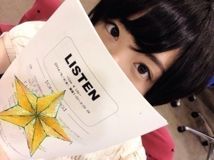
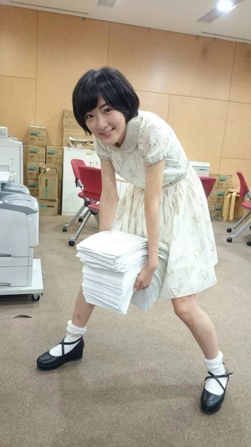
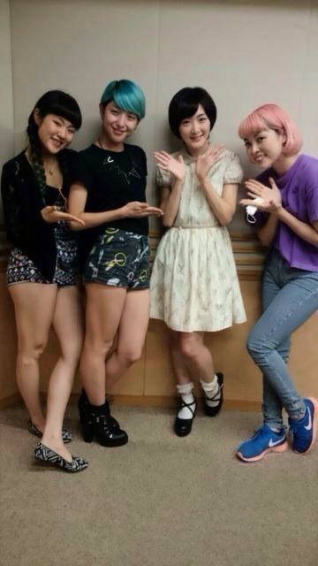
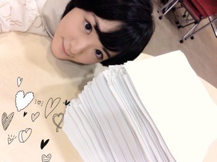

| 2014/09 05 Fri | ただいま日本からの ラジオヽ(・∀・)ノ |
台湾行って来たよ〜ヽ(・∀・)ノ
HTCのイベントで、トークショーやフォトセッション、HTC Ｊ butterflyの魅力などをアンバサダーとして広めて来ました〜ヽ(・∀・)ノ
台湾は今年二回目！

HTCのお仕事としても二回目ヽ(・∀・)ノ
台湾の皆さんは乃木坂ちゃんの事を凄く知って下さっていて凄く嬉しかったですヽ(・∀・)ノ
また行くから待っててね〜

そして台湾から帰国し、初深夜ラジオ、初パーソナリティに挑戦して来ました！

リッスン木曜日〜！！
聴い下さった皆さん本当にありがとうございます〜(；ω；)
明日は金曜日で学校もお仕事もあるのに最後まで見守って下さった皆さんは素晴らしい⭐︎

メールこんなに来たよ〜ヽ(・∀・)ノ
最初から最後までずっと送って下さった方はネタが尽きないな〜めちゃ面白いな〜と思いながら読んでました！！
ゲストのcolor-codeさん！！

初ラジオ出演を私が一緒に出来てめちゃ嬉しかったですヽ(・∀・)ノ
凄くかっこ良くてかわいい3人で、さっそくファンになりました(///￣(工)￣///)
皆さんも是非チェックしてみてくださいねっヽ(・∀・)ノ
途中つっかえたり噛んだりアニメの話とか好きな事を話して興奮が爆発したりといろいろありましたが、
実は話す事が大好きで、いつかラジオ番組やりたいなって思っていたんです。
私は滑舌悪いし、トークが特別うまい訳ではありませんが、メールを頂いてリスナーの皆さんとお話しせたり、ゲストの方とお話ししたり、スタッフさんに教えてもらいながらつくるラジオが凄く好きになりました！！
これをきっかけにいつかチャンスを掴みたいなと思いますっっ！！

メールは宝である。
へばなっ☆彡
コメント(633)
2014/09/05 17:12